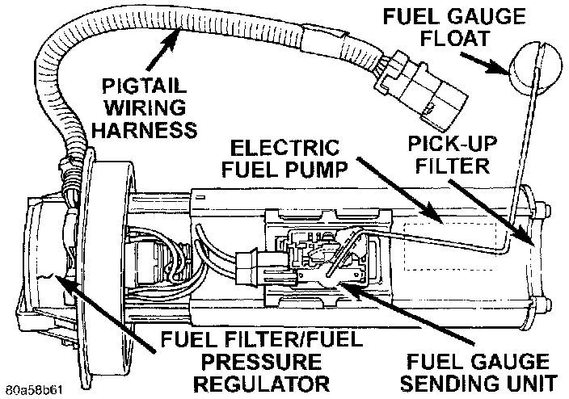

Fuel Gauge Sender: Description and Operation
FUEL GAUGE SENDING UNITFig. 2 Fuel Pump Module Components:

The fuel gauge sending unit ([1][2]fuel level sensor) is attached to the side of the fuel pump module. The sending unit consists of a float, an arm and a variable resistor (track). The resistor track is used to send electrical signals to the Powertrain Control Module (PCM) for fuel gauge operation and for OBD II emission requirements.
For fuel gauge operation: As fuel level increases, the float and arm move up. This decreases the sending unit resistance, causing the fuel gauge to read full. As fuel level decreases, the float and arm move down. This increases the sending unit resistance causing the fuel gauge to read empty.
After this fuel level signal is sent to the PCM, the PCM will transmit the data across the CCD bus circuits to the instrument panel. Here it is translated into the appropriate fuel gauge level reading.
For OBD II emission requirements: The voltage signal is sent from the resistor track to the PCM to indicate fuel level. The purpose of this feature is to prevent a false setting of misfire and fuel system monitor trouble codes. This is if the fuel level in the tank is less than approximately 15 percent, or more than approximately 85 percent of its rated capacity.